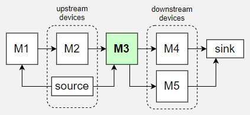

Code Introduction
This page contains information and guidelines to help you understand how SimPROCESD works and how to use it effectively.
Objects
The package provides the following objects for modeling a manufacturing process:
Source: Generates new parts for the model; beginning of production path(s).
Machine: Part processing device.
Buffer: Stores parts up to capacity with an optional minimum storage time.
DecisionGate: Conditionally allow parts to pass between its upstream and downstream.
Sink: Collect parts at the end of production path(s).
PartBatcher: Enforces output to be individual parts or batches of set size.
Objects above are devices which means they can receive and/or pass parts.
Maintainer: Performs work order requests such as maintenance.
ActionScheduler: Periodically performs actions on registered objects.
ResourceManager: Manages limited resources needed by Machines to process parts.
Probes & Sensors: Take periodic or on-demand readings and record them. The recorded data is accessible during the simulation and after.
Simulation time
Simulation time is the time tracked within the simulation and is independent of how long it actually takes to simulate the model. Simulation time can be accessed through <Environment_instance>.now.
Simulation time is measured in time units. It is up to the developer of the model to determine what those time units represent (seconds, hours, years, etc.) and to be consistent with that definition throughout the model.
Upstream/Downstream
Arrows indicate part flow across devices.

The example above shows (direct) upstream and downstream devices with respect to M3. Upstream devices can pass parts to M3 and downstream devices are the ones which M3 can pass parts to.
The links between different devices are configured by setting the upstream parameter.
source = Source()
M1 = Machine(upstream = [source])
M2 = Machine(upstream = [M1])
M3 = Machine(upstream = [source, M2])
M4 = Machine(upstream = [M3])
M5 = Machine(upstream = [M3])
sink = Sink(upstream = [M4, M5])
M3can receive parts from bothsourceandM2.Parts are always passed one at a time between devices, however multiple parts may pass between devices before simulation time advances depending on devices’ cycle time.
Upstream list of devices (e.g. Machine) can be changed after the device has been created.
M1 = Machine(upstream = [S1, S2])
M1.set_upstream([S1]) # S2 is no longer upstream of M1.
A device’s upstream list can not contain the device itself. A circular flow is still possible if deviceA is set as upstream of deviceB and deviceB is set as upstream of deviceA.
Multiple Downstreams
Configuring a device to pass parts to multiple devices:
S1 = Source()
M1 = Machine(upstream = [S1])
B1 = Buffer(upstream = [S1], capacity = 5)
In this setup, parts from
S1can go to eitherM1orB1.As devices output parts, those parts will be passed to one of the downstream devices prioritizing devices that have been waiting for input parts the longest.
To change the priority of a device override the function
<Device_instance>.get_sorted_downstream_listand to change the default behavior for the whole system override the static funcionDevice.downstream_priority_sorter.
Simple Example
A complete example where parts are created by the source, passed to M1, and then passed to the sink. The simulation is set to run for 100 time units.
from simprocesd.model import System
from simprocesd.model.factory_floor import Source, Machine, Sink, Part
system = System()
part = Part()
source = Source(sample_part = part, cycle_time = 1)
M1 = Machine(upstream = [source], cycle_time = 1)
sink = Sink(upstream = [M1])
system.simulate(simulation_duration = 100)
Same example with additional comments:
# System needs to be created first so that other simulation objects
# can register themselves with it automatically.
system = System()
# Create a part object to be used as a sample in the Source.
part = Part()
# Source will create copies of the sample part every 1 time unit
source = Source(sample_part = part, cycle_time = 1)
# Create Machine that gets parts from Source and takes 1 time unit
# to process the part before passing it downstream.
M1 = Machine(upstream = [source], cycle_time = 1)
# Sink is the end of the line and can only receive parts.
sink = Sink(upstream = [M1])
# Run the simulation until 100 time units passed.
system.simulate(simulation_duration = 100)
Post-Simulation Analysis
How to go about collecting data during the simulation and retrieving it afterwards.
Simulated Sensors
Sensor example: ConditionBasedMaintenance.py
Integrated Data Collection
SimPROCESD by default records some data about the simulation.
Description |
list_label |
sub_label |
data_point |
|---|---|---|---|
Source outputs a part |
‘supplied_new_part’ |
source name |
(time,) |
Device receives a part |
‘received_part’ |
device name |
(time, part_id, part_quality, part_value) |
Machine processes a part |
‘produced_part’ |
device name |
(time, part_id, part_quality, part_value) |
Device failure |
‘device_failure’ |
device name |
(time, lost_part_ID) |
Work order enters queue |
‘enter_queue’ |
maintainer name |
(time, target_name, maintenance_tag, info_string) |
Work order begins |
‘start_work_order’ |
maintainer name |
(time, target_name, maintenance_tag, info_string) |
Work order completes |
‘finish_work_order’ |
maintainer name |
(time, target_name, maintenance_tag, info_string) |
Buffer level change |
‘level’ |
buffer name |
(time, buffer_level) |
Sink receives a part |
‘collected_part’ |
sink name |
(time, part_quality, part_value) |
Schedule’s state change |
‘schedule_update’ |
schedule name |
(time, state) |
Available resource change |
‘resource_update’ |
resource name |
(time, resource_amount) |
Example of retrieving a table of raw data for a specific device.
system.simulation_data['produced_parts']['M1']
# <System_instance>.simulation_data[list_label][sub_label]
# or
# <Environment_instance>.simulation_data[list_label][sub_label]
That data gets stored in simulation data which is a dictionary with the following structure:
Key:
list_label(string)Value: Dictionary
Key:
sub_label(string)Value: List of tuples stored with that
list_labelandsub_labelThe list contains data in the order that it was recorded.
tuples are
tuple_of_datafrom the example below.
Adding new datapoints to be recorded during the simulation is easy:
# Call the following code on any Asset (Device, Machine, Source, etc).
M1.env.add_datapoint('new label', M1.name, (M1.env.now, self._output.quality))
# <Asset>.env.add_datapoint(list_label, sub_label, tuple_of_data)
If objects provided to add_datapoint are later changed then the recorded datapoint will change as well. For example, if the caller retains a reference to tuple_of_data and changes its contents then the recorded datapoint will be changed as well which can be confusing.
These calls can be integrated into other parts like Machine’s callbacks:
M1 = Machine(upstream = [source], cycle_time = 1)
def on_received_part(device, part):
device.env.add_datapoint('received_part_value',
device.name,
(device.env.now, part.value))
# Configure on_received_part to be called every time M1 receives a part.
M1.add_receive_part_callback(on_received_part)
...run simulation...
# Print list of recorded tuples
print(system.simulation_data['received_part_value'][M1.name])
simulation_data Reference
There are built-in functions under GitHub: simulation_info_utils.py that show graphs based on simulation_data.
Discrete Event Simulator
SimPROCESD is a discrete event simulator which means that the simulation is driven forward by events. Initial events are created during initialization of the simulated objects and additional events are generated in the process of executing events.
Multiple events can be scheduled to happen at the exact same time in which case they are
executed in order of EventType priority
(represented by a number).
Example of how Source can schedule an event for generating a new part after cycle_time has passed:
self.env.schedule_event( # Environment.schedule_event(...
self.env.now + self.cycle_time, # Absolute simulation time when the event will execute.
self.id, # ID of the object whose action the event represents.
self._prepare_next_part, # The action to be executed (a function).
EventType.FINISH_PROCESSING, # Event type. Helps determine correct execution order.
'{self.name} prepares part.' # A debug string to associate with the event.
)